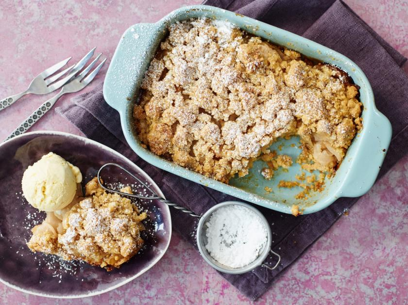

HOME
Apple Crumble Recipe
Description
Apple Crumble is a classic, comforting dessert featuring tender baked apples topped
with a crispy, buttery crumble. Perfect served warm with a scoop of vanilla ice cream.
This easy-to-make recipe combines sweet and tart apples with a crunchy oat
topping for a delicious treat.
Ingredients
- 6 medium apples (Granny Smith or similar), peeled and sliced
- 1 tablespoon lemon juice
- 3/4 cup granulated sugar
- 1 teaspoon ground cinnamon
- 1/2 teaspoon ground nutmeg
- 1 cup all-purpose flour
- 1 cup rolled oats
- 1/2 cup brown sugar
- 1/2 cup unsalted butter, cold and cubed
- Pinch of salt
Steps
- Preheat oven to 350°F (175°C).
- In a large bowl, toss sliced apples with lemon juice, granulated sugar, cinnamon, and nutmeg. Transfer to a baking dish.
- In another bowl, mix flour, oats, brown sugar, and salt.
- Cut in the cold butter using your fingers or a pastry cutter until the mixture resembles coarse crumbs.
- Sprinkle the crumble mixture evenly over the apples.
- Bake for 40-45 minutes, until the topping is golden brown and apples are bubbly.
- Let cool slightly before serving. Delicious with vanilla ice cream or custard!

Home